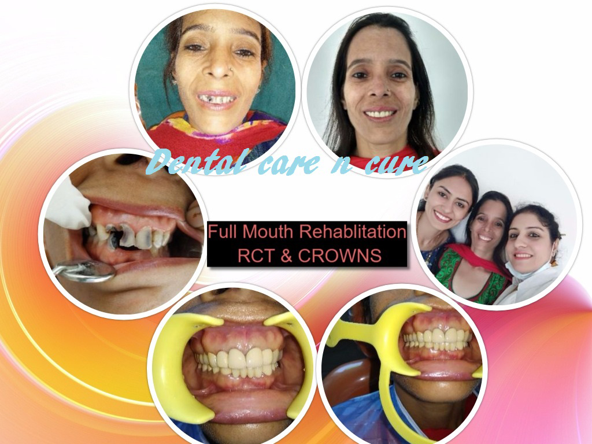

Dental Crowns and Tooth Bridges

What are Dental Crowns and Bridges?
Crowns and bridges are fixed prosthetic devices. Unlike removable devices such as dentures, which you can take out and clean daily, crowns and bridges are cemented onto existing teeth or implants, and can only be removed by a dentist.
How do Crowns Work?
A crown is used to entirely cover or "cap" a damaged tooth. Besides strengthening a damaged tooth, a crown can be used to improve its appearance, shape or alignment. A crown is placed on top of an implant to provide a tooth-like shape and structure for function. Porcelain or ceramic crowns can be matched to the color of your natural teeth.
Your dentist may recommend a crown to:
- Replace a large filling when there isn't enough tooth remaining
- Protect a weak tooth from fracturing
- Restore a fractured tooth
- Attach a bridge
- Cover a dental implant
- Cover a discolored or poorly shaped tooth
- Cover a tooth that has had root canal treatment
How do Bridges Work?
A bridge may be recommended if you're missing one or more teeth. Gaps left by missing teeth eventually cause the remaining teeth to rotate or shift into the empty spaces, resulting in a bad bite. The imbalance caused by missing teeth can also lead to gum disease and temporomandibular joint (TMJ) disorders.
Bridges are commonly used to replace one or more missing teeth. They span the space where the teeth are missing. Bridges are cemented to the natural teeth or implants surrounding the empty space. These teeth, called abutments, serve as anchors for the bridge. A replacement tooth, called a pontic, is attached to the crowns that cover the abutments. As with crowns, you have a choice of materials for bridges. Your dentist can help you decide which to use, based on the location of the missing tooth (or teeth), its function, aesthetic considerations and cost.